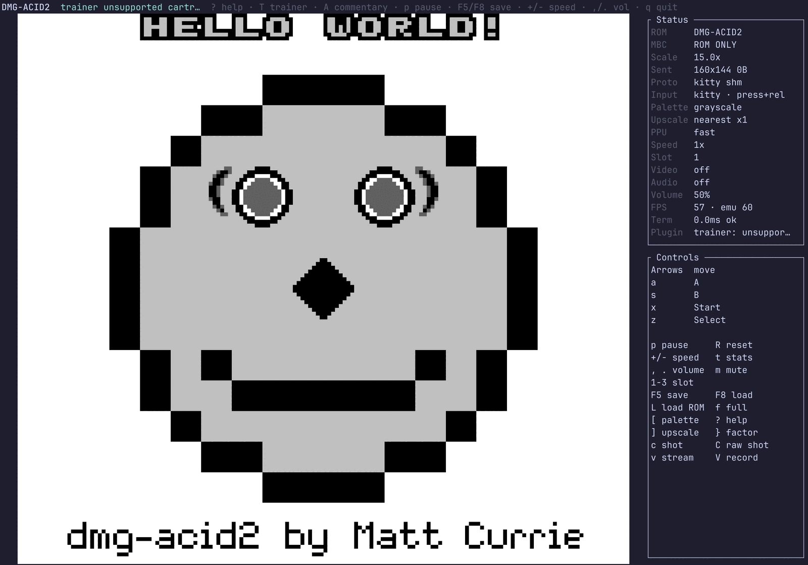
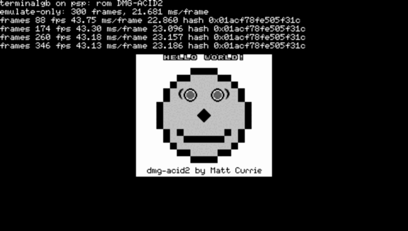

Project · Emulator
TerminalGB
A Game Boy and Game Boy Color emulator written in Rust. It runs on the desktop, in a terminal, in a browser and on a PSP, and by default it draws the picture one dot at a time, the way the hardware does. Every frame it produces is checked against hardware-captured reference images and public test ROMs on every build.
On the default identical picture engine. The Shootout figure is 5th of
19 through their own 264-row manifest.

What it does
Everything here is built and shipping.
The machine
Nine consoles, four mappers
- DMG, DMG 0, Pocket, Color, CGB 0, Advance, Super Game Boy and SGB2 — nine boot profiles, picked from the cartridge header
- Mappers 1, 2, 3 and 5, with a real-time clock
- Battery saves in the ecosystem's own format
- Versioned save states, portable to the browser build
- An optional boot ROM you supply
- Two picture engines:
standard, or hardware-exactidentical
In your terminal
Degrades, never refuses
- Kitty, Sixel, iTerm2 and half-block rendering
- Shared-memory frame transport — 87 bytes a frame
- Four upscalers, palettes, HiDPI correction
- Runs in any terminal, using whatever that terminal supports
Sound
The whole audio unit
- Complete APU emulation, 36 ms latency
- Volume control that never touches emulation
- Chiptune renderer — instructions in, real audio out
- Music mode: ROMs as a shelf, with export
Linking
Two consoles on one cable
- Two local instances linked, with a trade proven end to end
- BGB's network protocol over TCP
- A virtual trade partner, so no second cartridge is needed
- Cable Club battles against that partner
Plugins
Reading the running cartridge
- Live trainer view: party, stats, sprites, catch rate
- Shiny hunting from Gen 1's hidden values
- Battle control — start any battle from outside the game
- An agent substrate for autonomous play
Beyond the terminal
Desktop, browser, handheld
- A virtual camera the system sees as a webcam
- Screenshots, recording, a telemetry stream
- An MCP server, so any Claude client can drive it
- An embeddable core with one third-party dependency
- A WebAssembly build, and a reusable conformance action
- A PSP frontend
Test scores
Both picture engines, same build. standard paints a whole scanline at
once from the registers as they stand at the end of it. identical
walks the real pipeline — fetcher, FIFO, sprite fetches, window restart,
SCX & 7 discard — so mode 3's length falls out of the machine
instead of being asserted. Only the second can represent the wrong tile source for
one dot in the middle of a line, and only the second can catch it.
| Suite | identical (default) |
standard |
|---|---|---|
| Mooneye GB acceptance | 75 / 75 | 67 / 75 |
| Mooneye GB emulator-only | 28 / 28 | 28 / 28 |
| Mooneye GB misc (Color) | 8 / 8 | 8 / 8 |
| SameSuite — audio rows | 66 / 69 | 66 / 69 |
| SameSuite — whole suite | 73 / 76 | 73 / 76 |
| Gambatte | 3,622 / 5,320 | 3,176 / 5,320 |
| GBMicrotest | 339 / 513 | 252 / 513 |
| Mooneye (wilbertpol) | 82 / 122 | 62 / 122 |
| AGE | 11 / 59 | 3 / 59 |
| Scribbltests | 9 / 13 | 7 / 13 |
| CasualPokePlayer | 4 / 4 | 4 / 4 |
| rtc3test | 6 / 6 | 6 / 6 |
| cgb-acid2 · cgb-acid-hell | 1 / 1 · 1 / 1 | 1 / 1 · 0 / 1 |
| Mealybug Tearoom, pixel-exact rows | 29 / 79 | 3 / 79 |
| Frame cost, Pokémon Blue, picture on, one P-core | 0.373 ms | 0.094 ms |
The exact engine costs four times as much per frame and still spends only 2.2% of a
frame's 16.7 ms budget on a desktop core, which is why it is the default. The PSP frontend pins standard: an exact picture nobody can
play is worth nothing. Full throughput figures are on the
performance page.
Where the reds are
-
Eight Mooneye rows fail on the fast engine, and all eight are
acceptance/ppu. Mid-scanline picture timing is the one thing a whole-scanline renderer cannot represent. The exact engine passes all 103. -
Mealybug is the hard suite, and 45 of its 79 rows are not winnable here.
27 need the boot ROM's
®glyph in video RAM, which means shipping Nintendo's boot ROM; 8 compare a greyscale render against a colour reference; 7 are a ROM-versus-reference mismatch inside the suite. The honest denominator is 34. For scale, SameBoy scores 15 on the Shootout's 24 published DMG rows. - Three SameSuite rows are red, all in the audio unit: channel 1's frequency change timing and sweep restart, and channel 4's frequency change.
-
Blargg's
oam_bugis red on a Color console and must stay red. All eight sub-tests pass on DMG, where the object-memory defect is real. Color silicon has no such defect, so hardware fails that ROM too. -
csp/bullyis red. It waits forLY >= $90before reading the divider, so what it pins is the phase between the system counter and the picture processor at boot hand-off — and nothing published measures where a Color boot ROM leaves the PPU. The whole argument →

Milestones
The double-speed pixel fix
A one-dot LCDC write-commit stagger, calibrated on single-speed
ROMs, had no room to land once the CPU clock doubled. The AGE ROM
m3-bg-lcdc-ds@cgbBCE went from 2,304 wrong pixels to a pixel-exact
pass. Read it →
Object DMA drives the address bus
The transfer controller takes the object-memory address lines, so the object scan reads nothing while a transfer runs. Shootout 238 → 239, Gambatte +4, zero losses. Read it →
The exact engine becomes the default
identical stopped losing rows the fast engine still passed, so it
was promoted. Fifteen Shootout rows gained, none lost — 223 → 238 — and
cgb-acid2, the one row the per-dot engine used to lose, is
pixel-exact on both now.
Object DMA has a bus, and the CPU has to share it
The data half of the same physical rule. Gambatte went 2,682 → 3,083 on the fast engine. Four hundred rows, from modelling a bus conflict instead of a copy.
Writing
-
The double-speed bug that cost 2,304 pixels
A trick worth one dot of time vanished when the CPU clock doubled, and a Color game drew a wrong stripe.
-
271 colours in a four-shade picture
Half-block terminal output was blurry on GNOME terminals and crisp on WezTerm. The cause was one line in a dependency.
-
The transfer controller owns the bus
Object DMA is usually modelled as a copy. It is also an address-bus conflict, and the sprite scan is on the other end of those lines.
-
The red we refused to fix
One sweep would have turned a failing test green. Taking it would have moved every Color cartridge's divider on the evidence of a single row.
Where these numbers come from
Suite scores are the emulator's own checked-in conformance baselines, re-run in CI
on every push and red on a change in either direction. Test ROMs are never
vendored — they are fetched at run time from pinned commits, and every verdict is
the ROM's own or its author's reference image. The Shootout figure comes from a
shootout_scout run through their published manifest on 22 Aug 2026.
TerminalGB ships no ROMs, no boot ROM and no extracted game assets. The screenshots here are of test ROMs the project is free to show.